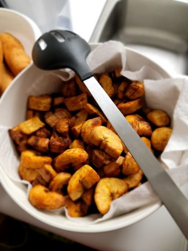

Fried Plantain

Description
This is a recipe for Fried Plantain. It is delicious and very easy to prepare.
It is a great main meal and often features as a sside dish in meals like Jollof rice and pepper chicken
Ingredients
- Ripe yellow Plantain
- Vegetable oil
- Salt(optional)
Steps
- Wash, peel and slice the plantain. Put the sliced plantains in a bowl, add a little salt, and toss the plantain to distribute the salt evenly.
- Pour enough vegetable oil to cover the plantain into a frying pan and allow to heat. If using a deep fryer, preheat the oil to 170°C.
Cooking Directions
- When the oil is heated, add a considerable quantity of the plantain slices to the oil, leaving enough room for the slices to fry evenly.
- When the underside of the slices starts to turn golden, flip the slices on their other side
- Fry the plantains until they are evenly brown
- Take out the plantains and place in a plate lined with kitchen rolls to soak up the excess oil.
- Fry the next batch using the same steps until done.